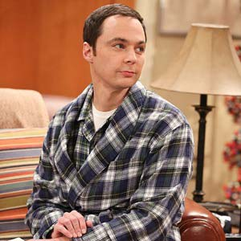

are Keeping Up With The Kardashians,
The Big Bang Theory
(because I LOVE Sheldon from the big bang theory),

Young Sheldon.
I also like makeups. I really like Kylie Cosmetics lipsticks
I'm making this website for the first time in my life and it's been fun and not easy. I feel like I'm not smart enough for this but my teacher says I am so I gotta be more confident
Ever since I was a little girl, it's been a thing. I was never confident even when I should've been confident